Seis mesas de matemáticas con copos, gorros, bufandas y pingüinos.
Pensado desde el Diseño Universal para el Aprendizaje (DUA), con tres niveles en cada estación. Pictogramas de Sergio
Palao para ARASAAC (Gobierno de Aragón), licencia CC BY-NC-SA.
Licencia CC BY-NC-SA 4.0 ideducando.es
Versiónseguracon piezas grandes
De un vistazo · Infantil, de 3 a 6 años
Estaciones de matemáticas de invierno
Seis mesas para aprender matemáticas moviendo piezas con las manos, con la ropa y los animales del invierno. Cada mesa
tiene tres niveles. Se monta con piezas de clase o de casa, o en su versión segura, de fichas grandes.
Para quiénLa clase entera, de 3 a 6 años, y los apoyos en pequeño grupo de Pedagogía Terapéutica (PT)
o de Audición y Lenguaje (AL).
Cuánto duraEntre 10 y 15 minutos por mesa. Tres mesas por día, o una sola mesa abierta como rincón. Da
juego todo el invierno.
Cómo se evalúaObservando a cada niño o niña mientras juega, con el registro (página 28). Cada cual se
evalúa en la hoja de la página 29.
Qué van a aprender
Poner tantos copos como dice un número, hasta 3, 6 o 10.
Contar botones dibujados y buscar su número, también el 0.
Seguir series de dos y de tres piezas y descubrir la que falta.
Clasificar ropa por tipo, por color o con dos criterios a la vez.
Comparar bufandas y medirlas con manoplas puestas en fila.
Contar pingüinos de uno en uno y decir cuántos hay.
Las seis estaciones
Tres niveles en cada mesa
Todo el grupo juega a lo mismo en la misma mesa. Lo que cambia es la ayuda y el número de piezas.
1Con más apoyo: menos piezas y el adulto hace de modelo.
2Base: lo esperable a esa edad.
3Con más reto: números más altos o explicar cómo lo ha hecho.
Dos versiones de material
De clase y casa Pompones y tapones de botella. A partir de 3 años, siempre con un adulto al
lado y lejos de quien todavía se mete objetos en la boca.
Segura En lugar de pompones y tapones, fichas plastificadas de 5 cm de lado. Para la clase
de 3 años y para quien todavía se mete objetos en la boca.
Currículo de Infantil de la Región de Murcia
Qué trabaja del Decreto 196/2022
Texto literal del decreto, con su página en el Boletín Oficial de la Región de Murcia (BORM) n.º 255, de 4 de noviembre de
2022. DEE es el área Descubrimiento y Exploración del Entorno, y CA, Crecimiento en Armonía.
Criterios de evaluación del segundo ciclo
DEE 1.1 «Establecer distintas relaciones entre los objetos a partir de sus cualidades o
atributos, mostrando curiosidad e interés». Estaciones 3, 4 y 5. Pág. 33094.
DEE 1.2 «Emplear los cuantificadores básicos más significativos en el contexto del juego y
en la interacción con los demás». Estaciones 1, 2 y 6. Pág. 33094.
DEE 1.4 «Identificar las situaciones cotidianas en las que es preciso medir, utilizando el
cuerpo u otros materiales y herramientas para efectuar las medidas». Estación 5. Pág. 33094.
CA 1.3 «Manejar diferentes objetos, útiles y herramientas en situaciones de juego y en la
realización de tareas cotidianas, mostrando un control progresivo y de coordinación de movimientos de carácter fino».
Todas. Pág. 33083.
CA 4.1 «Participar con iniciativa en juegos y actividades colectivas relacionándose con otras
personas con actitudes de afecto y de empatía, respetando los distintos ritmos individuales y evitando todo tipo de
discriminación». El trabajo en grupo y en pareja. Pág. 33083.
Otros saberes que aparecen
DEE-C Pág. 33096
«Fenómenos naturales: identificación y repercusión en la vida de las personas». La ropa de abrigo, estación 4.
CA-C Pág. 33084
«Identificación de situaciones peligrosas, en escenarios de la vida cotidiana, y prevención de accidentes». La norma de no llevarse nada a la boca.
Saberes básicos del segundo ciclo
DEE-A Pág. 33095
«Cuantificadores básicos contextualizados: muchos-pocos, unos-algunos-varios, más que-menos que, todos-ninguno...». 1, 2 y 6.
«Funcionalidad de los números en la vida cotidiana». 1, 2 y 6.
«Cualidades o atributos de objetos y materiales. Relaciones de orden, correspondencia, clasificación y comparación». 3 a 6.
«Discriminación de algunos atributos de objetos y materias: color, forma, función... Percepción de semejanzas y diferencias entre los objetos». 3 y 4.
«Clasificación de elementos. Relaciones de pertenencia y no pertenencia». 4.
«Identificación de cualidades (tamaño, cantidad...) y sus grados (pocos, muchos, pequeño, mediano, grande...)». 4 y 5.
«Situaciones en que se hace necesario medir. Diferentes herramientas de medida convencionales (regla, metro, balanzas, recipientes...) y no convencionales (pasos, pies, cuerdas, piedras...)». 5.
«El tiempo y su organización: día-noche, estaciones, ciclos, calendario...». El invierno.
Lo que pide el decreto
Las medidas «se regirán por los principios del Diseño Universal de Aprendizaje» (art. 4.6, pág. 33056): aquí, tres niveles y dos versiones.
«La observación directa y sistemática constituirá la técnica principal del proceso de evaluación» (art. 14.1, pág. 33060): de ahí el registro.
Para el aula, «material desestructurado y de reciclaje con usos no preestablecidos» (área DEE, pág. 33088), como los tapones.
Seguridad y material
Dos versiones para las mismas mesas
Con cualquiera de las dos se aprende lo mismo. Cuando alguien del grupo necesita la segura, el grupo entero juega con ella y
nadie se queda aparte.
Estación
De clase y casa
Segura
1 · Copos en la manopla
10 pompones blancos de 2,5 cm, en un cuenco.
10 fichas de copo (página 24).
2 · Cada muñeco, su gorro
Las mismas tarjetas en las dos: 20 muñecos (páginas 11 y 12) y 20 gorros (página 25). Los botones van dibujados.
En las dos: 20 fichas de ropa (página 27) o ropa de verdad, y 3 cajas o cestos. La ropa, sin botones ni pompones que se suelten.
5 · Bufandas largas y cortas
En las dos: 4 bufandas de papel (página 19) y 8 fichas de manopla para medir (página 26). Si quieres, también bufandas de verdad. Para el más reto, 10 tapones.
6 · Pingüinos en el témpano
10 tapones en un cuenco: cada tapón es un pingüino.
10 fichas de pingüino (página 24).
Aviso de seguridad: léelo antes de montar las mesas
Piezas pequeñas. Un tapón o un pompón puede atascarse en la garganta. La norma de seguridad de los
juguetes exige que lo pensado para menores de 3 años no tenga piezas que se puedan tragar o inhalar (Real Decreto
1205/2011, anexo II). La Asociación Española de Pediatría (AEP) aconseja intentar evitarlas hasta los 3 a 5 años y
recuerda: «La mejor medida preventiva es la supervisión constante» (AEP, 2024).
Así que la versión de clase y casa es para mayores de 3 años, con un adulto sentado junto al grupo y lejos
de quien todavía se mete objetos en la boca. Si solo hay un adulto, las piezas pequeñas van en una sola mesa. Con la clase
de 3 años, usa primero la versión segura.
Sin botones. La AEP pide «No permitir que jueguen con bolsas de plástico o de embalaje, monedas o
botones» (AEP, 2024). En este material, los botones solo están dibujados.
Tapones limpios. Solo de botellas de agua, leche o zumo, nunca de productos de limpieza ni de medicinas.
Lávalos con agua y jabón y sécalos bien.
Fichas y ropa. Las fichas miden unos 5 cm de lado y no pasan por un hueco de 3 cm, la medida que da la
AEP para las piezas de los juguetes de menores de 3 años. Cambia la que se despegue o se rompa. La ropa de verdad, sin
botones ni adornos que se suelten. Las bufandas se miden en la mesa, nunca al cuello.
Si alguien se atraganta. Si tose, anímale a seguir tosiendo y no le des golpes. Si la tos es débil o le
cuesta mucho respirar, llama al 112 (AEP, 2024).
Manos. Al recoger, agua y jabón para todas las manos.
Las fuentes, completas, están en la página 32.
Cómo organizarlas
Cada grupo pasa por todas las mesas
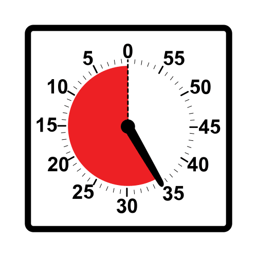
La rotación
Monta cada estación en una mesa y deja a la vista su tarjeta de pasos (página 22). Forma grupos de 4 o 5, de ritmos
distintos. En el panel (página 23), la tarjeta de cada grupo va con velcro debajo de su mesa. Con cada señal, el grupo
avanza a la mesa siguiente, y la 6 enlaza con la 1. Seis mesas seguidas cansan: tres un día y tres otro, o una sola mesa
abierta cada día.
Antes de empezar
Enseña en la asamblea una o dos estaciones nuevas cada día. Juega tú delante, pensando en voz alta, y practicad la tarjeta
de pasos. La agenda visual de IdEducando
ayuda a anunciar los cambios.
La señal de cambio
Un reloj de arena o un temporizador visual, a la vista. Un minuto antes, avisa: «Se acaba el tiempo». Luego, una señal
para ojos y oídos, como bajar la luz y cantar algo corto. El paseo a la otra mesa puede ser una
pausa activa.
Dónde se sienta el adulto
En la mesa con tapones y pompones, o en la que el grupo aún no conoce. Pon palabras a lo que hacen, cambia el nivel si
hace falta y apunta lo que ves (página 28). Si solo hay un adulto, las demás mesas van con fichas.
Los niveles en la mesa
Un sobre por nivel, cada uno con su forma: el 1 es un círculo 1, el 2, un cuadrado
2 y el 3, un rombo 3. Se empieza donde le ves y se cambia de sobre
cuando hace falta.
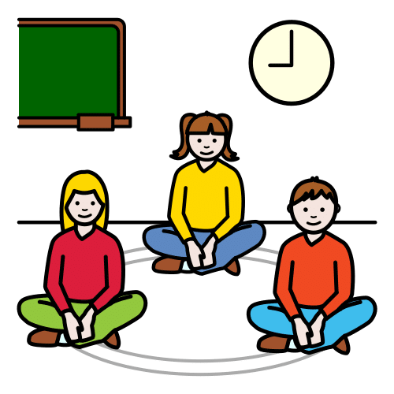
Para cerrar
Cinco minutos en la asamblea: ¿qué mesa os ha gustado más?, ¿qué habéis descubierto? Enseñad una bufanda tejida o un
témpano lleno. La autoevaluación (página 29), cada semana.
Lo que dice la investigación
Un metaanálisis de 55 estudios, desde el último curso de Infantil hasta la universidad, comparó aprender matemáticas con
objetos y aprenderlas solo con símbolos. Los objetos ayudaron y el efecto fue entre pequeño y moderado, según cómo se
enseñaba (Carbonneau, Marley y Selig, 2013). De ahí que cada pieza vaya unida a un número, a una palabra o a una pregunta.
El DUA en estas mesas, según el centro de investigación CAST (versión 3.0, 2024)
8.2 Optimizar los desafíos y el apoyo: tres niveles por mesa.
2.5 Ilustrar a través de múltiples medios: piezas, dibujos y números dicen lo mismo.
4.1 Variar y valorar los métodos de respuesta, navegación y movimiento: se responde colocando, señalando o hablando.
8.3 Fomentar la colaboración, la interdependencia y el aprendizaje colectivo: en las mesas 1 y 6, uno hace y su pareja comprueba.
6.4 Ampliar la capacidad para dar seguimiento al progreso: se comprueban solos con la manopla de 10 y el témpano.
7.3 Fomentar la alegría y el juego: muñecos y pingüinos lo convierten en juego.
1
Estación 1 · Cantidad
Copos en la manopla
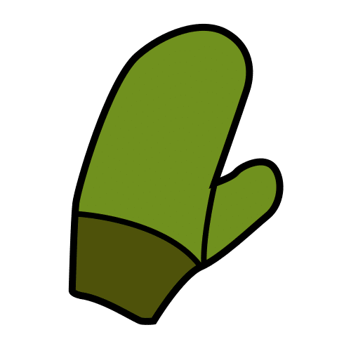
Para qué: hacer una colección a partir de un número. La manopla dice cuántos copos lleva y el niño o la niña
los pone, de uno en uno.
DEE 1.2 Saberes de los cuantificadores y de para qué sirven los números (página 4).
De clase y casa
10 pompones blancos de 2,5 cm, que son los copos, en un cuenco.
Segura
10 fichas de copo (página 24). Son grandes: van al lado de la manopla, en fila.
Imprimibles: manoplas de los niveles 1 y 2 (página 8), manoplas del nivel 3 y manopla de 10 (página 9).
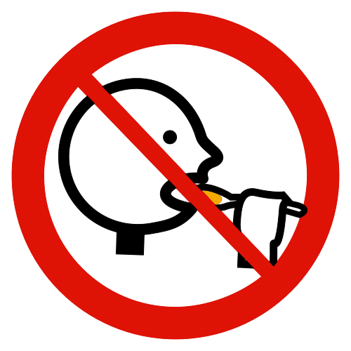
Los pompones son piezas pequeñas: un adulto se queda en esta mesa. Si alguien todavía se mete objetos en la boca, mejor fichas.
Cómo se juega, en parejas
Cada niño o niña coge una manopla del sobre de su nivel y dice su número en voz alta.
«¡Nieva!»: pone tantos copos como dice el número, de uno en uno y contando.
Cambia su manopla por la de su pareja.
Cuenta los copos de la manopla de su pareja y dice si está bien.
Los copos vuelven al cuenco y cada cual coge otra manopla.
Preguntas que ayudan: «¿Cuántos copos lleva?», «¿Cómo lo sabes?», «¿Caben más?», «¿Qué manopla tiene más copos, la tuya o la mía?».
Los tres niveles
1Con más apoyo
Números 1, 2 y 3 con puntos bien grandes: un copo sobre cada punto, y el adulto cuenta a la vez.
2Base
Números del 1 al 6, cada uno con los puntos del dado.
3Con más reto
Números del 1 al 10, sin puntos. Para comprobar, la manopla de 10.
Más reto: «Si cae un copo más, ¿cuántos habrá?».
Qué observar
Dice un número por copo, sin dejarse ninguno ni contar uno dos veces.
A «¿cuántos hay?» responde sin volver a contar.
Ve 1, 2 o 3 copos de un golpe, sin contar.
Usa «más», «menos» y «ninguno».
Ajustes
Si le cuesta coger piezas: mejor las fichas, que se arrastran, en una bandeja baja. También vale que señale y que su pareja coloque.
Si ve poco: puntos repasados con cola blanca, para notarlos con el dedo, y fondo oscuro.
Si habla poco: cuenta tú despacio, en voz alta, y vale que conteste enseñando los dedos.
1
Copos en la manopla Manoplas de los niveles 1 y 2
Plastifica la hoja entera y recorta cada manopla con un borde de plástico de 2 o 3 mm por fuera de la línea de puntos. Cada nivel va en su propio sobre.
1Nivel 1 · Números 1, 2 y 3, con puntos grandes: un copo en cada punto.
2Nivel 2 · Números del 1 al 6, con los puntos del dado.
Las manoplas son dibujos de IdEducando.
1
Copos en la manopla Nivel 3 y manopla de 10
Plastifica la hoja entera y recorta con un borde de plástico de 2 o 3 mm. La manopla de 10 sirve para comprobar: cinco copos arriba y los demás abajo.
3Nivel 3 · Números del 1 al 10, sin puntos.
Manopla de 10 · Un pompón en cada círculo. Con fichas, haced dos filas de 5 en la mesa.
Las manoplas son dibujos de IdEducando.
2
Estación 2 · Cantidad y número
Cada muñeco, su gorro
Para qué: contar los botones de un muñeco de nieve y buscar el gorro que lleva ese número. Es pasar de una
cantidad que se ve a su número escrito.
DEE 1.2 Saberes de los cuantificadores, también «ninguno», y de los números (página 4).
En las dos versiones
Solo tarjetas: 20 muñecos (páginas 11 y 12) y 20 gorros (página 25). Los botones van dibujados.
Soluciones
Cada gorro lleva el número de botones de su muñeco. El muñeco sin botones lleva el gorro del 0.
Imprimibles: muñecos de los niveles 1 y 2 (página 11), muñecos del nivel 3 (página 12) y gorros (página 25).
Todo son tarjetas plastificadas: sirve también para quien todavía se mete objetos en la boca, con el adulto cerca.
Cómo se juega
Pon los muñecos en fila y los gorros a un lado, con el dibujo hacia arriba.
El niño o la niña elige un muñeco y cuenta sus botones, tocando cada uno.
Busca el gorro que lleva ese número.
Se lo pone en la cabeza, justo encima de la tarjeta.
Cuando todos tienen gorro, los revisáis juntos: «¿Cada uno lleva el suyo?».
Preguntas que ayudan: «¿Cuántos botones tiene?», «¿Qué número buscas?», «¿Quién tiene más botones?», «¿Y este, que no tiene ninguno?».
Los tres niveles
1Con más apoyo
3 muñecos, con 1, 2 y 3 botones grandes. Sus gorros llevan el número y un punto por cada botón.
2Base
6 muñecos, del 1 al 6. Los gorros llevan solo el número.
3Con más reto
11 muñecos, del 0 al 10, con los botones de 5 en 5.
Más reto: ponlos en fila, del 0 al 10.
Qué observar
Toca cada botón una sola vez al contar.
Reconoce el número escrito y lo dice.
Entiende que sin botones es «ninguno» y que se escribe 0.
Ajustes
Si se pierde al contar: que tape con un dedo cada botón ya contado.
Si aún no reconoce los números: gorros del nivel 1, con puntos, aunque juegue en otro nivel.
Si le cuesta coger tarjetas: los gorros en una bandeja con borde, para arrastrarlos hasta el muñeco.
2
Cada muñeco, su gorro Muñecos de los niveles 1 y 2
Plastifica la hoja entera y recorta cada muñeco con un borde de plástico de 2 o 3 mm. Los gorros están en la página 25.
1Nivel 1 · 1, 2 y 3 botones grandes.
2Nivel 2 · Del 1 al 6 botones.
Los muñecos son dibujos de IdEducando.
2
Cada muñeco, su gorro Muñecos del nivel 3, del 0 al 10
Plastifica la hoja entera y recorta con un borde de plástico de 2 o 3 mm. Los botones van de 5 en 5: una fila llena y otra que empieza.
3Nivel 3 · Del 0 al 10 botones. El muñeco sin botones lleva el gorro del 0.
Los muñecos son dibujos de IdEducando.
3
Estación 3 · Series
Teje la bufanda
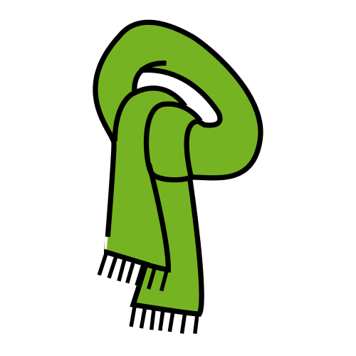
Para qué: descubrir qué se repite en las rayas de la bufanda y seguir tejiéndola. Seguir una serie es adivinar
qué viene después.
DEE 1.1 Saberes de los atributos de los objetos y de las relaciones de orden (página 4).
De clase y casa
6 pompones blancos, 6 tapones de botella y 6 pompones rojos, en un cuenco.
Imprimibles: 6 bufandas, 2 por nivel (páginas 14 y 15).
Tapones y pompones son piezas pequeñas: un adulto se queda en esta mesa. Para quien todavía se mete objetos en la boca, fichas.
Cómo se juega
Coloca una bufanda en la mesa y las piezas a su lado.
Leed juntos las rayas, tocándolas: «blanco, tapón, blanco, tapón…».
El niño o la niña pone en cada raya vacía la pieza que toca.
Leed otra vez la bufanda entera, de una punta a la otra.
Puede seguir tejiendo con más piezas después de la última raya.
Preguntas que ayudan: «¿Qué pieza toca?», «¿Por qué esa?», «¿Qué se repite?», «¿Qué iría en este hueco?».
Los tres niveles
1Con más apoyo
Dos piezas que se turnan (bufandas 1 y 2): blanco, tapón; blanco, tapón. Una palmada en cada raya.
2Base
Una pieza se repite dos veces (bufandas 3 y 4): blanco, blanco, tapón.
3Con más reto
Tres piezas (bufanda 5) y una raya vacía en medio (bufanda 6).
Más reto: teje una bufanda nueva para que la siga otra persona.
Qué observar
Recita la bufanda con ritmo hasta el final.
Elige la pieza siguiente y sabe decir el motivo.
Descubre qué falta en la raya vacía del medio.
Ajustes
Si confunde colores: en los niveles 1 y 2, pompón y tapón se distinguen por la forma. En el 3, el pompón blanco es claro y el rojo, oscuro.
Si se dispersa: deja a la vista pocas rayas y cubre el resto con un papel.
Si habla poco: una palmada para el pompón y un golpe en la mesa para el tapón.
3
Teje la bufanda Bufandas 1 a 3: niveles 1 y 2
Plastifica la hoja entera y recorta con un borde de plástico de 2 o 3 mm. Los pompones y los tapones son dibujos de IdEducando.
3
Teje la bufanda Bufandas 4 a 6: niveles 2 y 3
Plastifica la hoja entera y recorta con un borde de plástico de 2 o 3 mm. Los pompones y los tapones son dibujos de IdEducando.
4
Estación 4 · Clasificación
Ropa a su caja
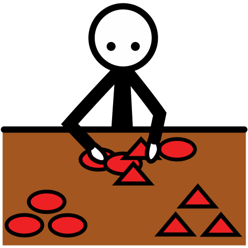
Para qué: ordenar la ropa de invierno en cajas según cómo es y explicar la regla que se ha seguido.
DEE 1.1 Saberes de los atributos, de la clasificación y de los fenómenos naturales: en invierno nos abrigamos (página 4).
En las dos versiones
20 fichas de ropa (página 27) y 3 cajas, cestos o aros con su etiqueta (página 17).
Con ropa de verdad
Gorros, manoplas y calcetines sin botones ni adornos que se suelten. Para el nivel 3, de adulto y de niño.
Imprimibles: etiquetas y tabla de doble entrada (página 17) y fichas de ropa (página 27).
Cómo se juega
Pon cada etiqueta en su caja y leedlas juntos.
El niño o la niña saca una prenda del sobre y dice qué es y cómo es: «una manopla azul».
La guarda en la caja que le toca.
Con el sobre vacío, revisad cada caja: «¿Hay alguna prenda que no va aquí?».
Se mezcla todo para quien viene después.
Preguntas que ayudan: «¿Por qué la guardas aquí?», «¿Cuál no va con las demás?», «¿Dónde irá esta?», «¿Y si las ordenamos por otra cosa?».
Los tres niveles
1Con más apoyo
Dos cajas, una de gorros y otra de manoplas. 6 fichas.
2Base
Por color, con 3 cajas: azul, rojo y amarillo. 6 fichas. Cada color lleva su marca: copo, corazón o estrella.
3Con más reto
Tipo y tamaño juntos, con la tabla de doble entrada. 8 fichas.
Más reto: busca en el perchero de clase una prenda para cada caja.
Qué observar
Sigue la misma regla con todas las prendas.
Dice la regla con sus palabras: «son gorros», «son amarillas».
En la tabla, piensa en el tipo y en el tamaño de cada prenda: «manopla grande».
Ajustes
Si confunde colores: que siga las marcas de las fichas, sin comentarlo delante del grupo.
Si le cuesta coger piezas: ropa de verdad, que se agarra mejor, y cajas grandes en el suelo.
Si habla poco: la frase «Va aquí porque es…», y vale que señale la etiqueta.
4
Ropa a su caja Etiquetas para las cajas y tabla de doble entrada
3Tabla de doble entrada · Busca la casilla de su tipo y de su tamaño.
Plastifica la hoja entera y recorta con un borde de plástico de 2 o 3 mm. Pictogramas de grande y pequeño: Sergio Palao. Origen: ARASAAC (arasaac.org). Licencia CC BY-NC-SA. Propiedad: Gobierno de Aragón. La ropa es de IdEducando.
5
Estación 5 · Medida y comparación
Bufandas largas y cortas
Para qué: ver cuál es más larga juntando las puntas y medir las bufandas con manoplas iguales, una detrás de
otra.
DEE 1.4DEE 1.1 Saberes de la medida y del tamaño (página 4).
En las dos versiones
4 bufandas de papel, 2 tarjetas y la tabla (página 19), y 8 fichas de manopla (página 26). Si quieres, bufandas de verdad.
Soluciones
Bufanda de rayas, 4 manoplas. De lunares, 2. De cuadros, 5. De copos, 3.
Imprimible: las 4 bufandas, las tarjetas de comparar y la tabla (página 19). Para la tabla, un rotulador de pizarra.
Las manoplas de papel no tienen peligro. Los tapones del más reto, solo con el adulto en la mesa. Las bufandas de verdad se miden en la mesa, nunca al cuello.
Cómo se juega
Pon dos bufandas en la mesa, una debajo de la otra.
Junta una punta de las dos, bien a la par.
Mira la otra punta: la que llega más lejos es la más larga. Ponle su tarjeta.
Para medir, pon manoplas en fila encima de la bufanda, sin huecos y sin montarlas, y cuéntalas.
Recoge las bufandas y las manoplas.
Preguntas que ayudan: «¿Qué bufanda llega más lejos?», «¿Cómo lo sabes?», «¿Cuántas manoplas mide?», «¿Queda algún hueco?».
Los tres niveles
1Con más apoyo
Junta dos bufandas, de papel o de verdad, y pone la tarjeta «más larga».
2Base
Ordena las 4 bufandas de papel, de la más corta a la más larga, y mide una con manoplas.
3Con más reto
Mide las 4 y anota cada medida en la tabla: número, puntos o palitos.
Más reto: mide una bufanda con tapones. ¿Por qué sale otro número?
Qué observar
Antes de comparar, pone las puntas a la par.
Pone las manoplas seguidas, sin huecos ni montadas.
Dice la medida con su unidad: «mide 4 manoplas».
Ajustes
Si le cuesta coger piezas: la bufanda sujeta a la mesa con cinta, y arrastra las manoplas.
Si ve poco: bordes de las bufandas repasados con cola blanca, para notarlos con el dedo.
Si necesita más reto: medir con manoplas la mesa, la puerta o su propio brazo.
5
Bufandas largas y cortas Bufandas, tarjetas y tabla para medir
Plastifica la hoja entera y recorta con un borde de plástico de 2 o 3 mm. Mide con las fichas de manopla de la página 26, ya plastificadas. Pictogramas de largo y corto: Sergio Palao. Origen: ARASAAC (arasaac.org). Licencia CC BY-NC-SA. Propiedad: Gobierno de Aragón. Las bufandas son de IdEducando.
6
Estación 6 · Conteo
Pingüinos en el témpano
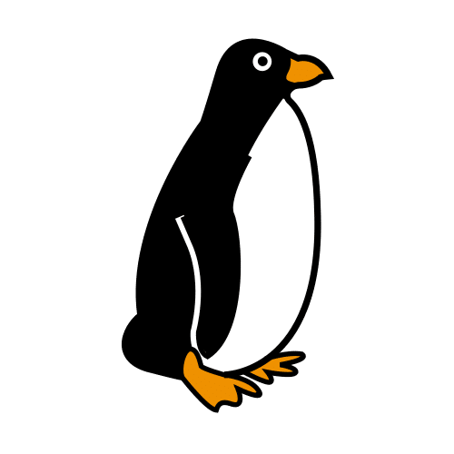
Para qué: contar pingüinos de uno en uno, subiéndolos a un témpano, y decir cuántos hay. El témpano ordena el
conteo y el número del último sitio lo confirma.
DEE 1.2 Saberes de los cuantificadores y de para qué sirven los números (página 4).
De clase y casa
10 tapones de botella en un cuenco, que es el mar. Cada tapón es un pingüino.
Segura
10 fichas de pingüino (página 24), también en un cuenco.
Imprimible: el témpano, en dos tiras: del 1 al 5 y del 6 al 10 (página 21).
Los tapones son piezas pequeñas: un adulto se queda en esta mesa. Para quien todavía se mete objetos en la boca, fichas.
Cómo se juega, en parejas
Pon el témpano en la mesa y, a su lado, el cuenco con los pingüinos: es el mar.
El niño o la niña coge un puñado de pingüinos del mar.
Los sube al témpano de uno en uno, contando en voz alta: uno en cada sitio, de izquierda a derecha.
Dice cuántos hay. Debajo del último pingüino, el número lo confirma.
Los pingüinos vuelven al mar y le toca a su pareja.
Preguntas que ayudan: «¿Cuántos hay?», «¿Cuántos crees que hay antes de contar?», «¿Cuántos sitios quedan libres?», «Si uno se tira al agua, ¿cuántos quedan?».
Los tres niveles
1Con más apoyo
Témpano del 1 al 5. El adulto le da de 1 a 5 pingüinos y cuenta a su lado.
2Base
Las dos tiras, una debajo de la otra: del 1 al 10. Coge un puñado y cuenta.
3Con más reto
Antes de contar, dice cuántos cree que hay. Cuenta señalando, sin moverlos, y comprueba en el témpano.
Más reto: «¿Cuántos faltan para llenarlo?».
Qué observar
Dice un número para cada pingüino, sin saltarse ninguno.
Sabe que el último número que dice es el total.
Ve sin contar que la fila de arriba tiene 5.
Ajustes
Si se pierde al contar: solo la tira del 1 al 5, y después la otra.
Si le cuesta coger piezas: fichas, que se pueden arrastrar hasta su sitio.
Si habla poco: puede contar con los dedos o señalar el número del témpano.
6
Pingüinos en el témpano Témpano en dos tiras: del 1 al 5 y del 6 al 10
Plastifica la hoja entera y recorta cada tira con un borde de plástico de 2 o 3 mm. Para el 10, pon la segunda tira debajo de la primera.
El témpano es un dibujo de IdEducando.
Tarjetas de pasos Cada mesa, con sus pasos
Plastifica la hoja, recórtala con un borde de plástico de 2 o 3 mm y pon cada tarjeta de pie en su mesa.
Pictogramas: Sergio Palao. Origen: ARASAAC (arasaac.org). Licencia CC BY-NC-SA. Propiedad: Gobierno de Aragón.
Panel de rotación ¿A qué mesa vamos ahora?
En el panel, el velcro rugoso; detrás de cada tarjeta de grupo, el suave. En las tarjetas, solo nombres escritos, sin fotos. Pictogramas: Sergio Palao. Origen: ARASAAC (arasaac.org). Licencia CC BY-NC-SA. Propiedad: Gobierno de Aragón. Los demás dibujos son de IdEducando.
Evaluación · Registro de observación
Estaciones de invierno: lo que veo en cada mesa
En Infantil, «La observación directa y sistemática constituirá la técnica principal del proceso de evaluación» (Decreto
196/2022, art. 14.1, pág. 33060). Basta con el nombre o las iniciales, y la hoja se queda en el centro.
Cómo apuntar: sin ayuda · A con ayuda · todavía no.Al lado, el nivel: 123. Por ejemplo, 2.Grupo: ______________ Fecha: ____________
N.º
Nombre
1CoposDEE 1.2
2GorrosDEE 1.2
3BufandaDEE 1.1
4RopaDEE 1.1
5MedirDEE 1.4
6PingüinosDEE 1.2
Notas
Mi autoevaluación Estaciones de matemáticas de invierno
Me llamo
Para el adulto: di en voz alta el nombre de cada mesa y señala las tres opciones. Cada niño o niña marca la suya con un
círculo o con color; si lo prefiere, la señala y tú la marcas. «Quiero repetir» también es una buena respuesta: dice qué
quiere practicar.
Pictogramas: Sergio Palao. Origen: ARASAAC (arasaac.org). Licencia CC BY-NC-SA. Propiedad: Gobierno de Aragón.
Atención a la diversidad
Ideas para cada necesidad
Medidas de este material, explicadas por lo que ayudan. Muchas sirven a toda la clase.
Alumnado con…
En estas mesas
Trastorno del espectro del autismo (TEA)
El panel y la agenda visual le dicen qué mesa toca y cuándo se cambia.
Un final que se ve: «Témpano lleno, he terminado». Si no le gusta tocar pompones, que use fichas de papel.
Trastorno por déficit de atención e hiperactividad (TDAH)
Darle encargos que impliquen moverse, como llevar el reloj de arena o repartir sobres.
Tareas cortas con final claro, como una bufanda. Cambiar de mesa le sirve de pausa.
Trastorno del desarrollo del lenguaje (TDL)
Frases cortas que se repiten: «Un copo. Otro copo. ¡Tres copos!».
Empieza en el nivel 1, con pocas piezas, y haz tú cada paso antes. Repetid la misma mesa varios días.
Ayuda con tu mano, que se retira poco a poco. Celebra cada logro.
Discapacidad motora
Fichas, que se arrastran mejor, y tiras sujetas con cinta o en un atril.
Indica la pieza mirándola o señalándola, y su pareja la coloca.
Discapacidad visual
Ropa y bufandas de verdad para tocar. Bordes repasados con cola blanca y fondo oscuro y mate.
Discapacidad auditiva
Háblale mirándole a la cara, con buena luz y el material a la vista. La señal de cambio, también con luz.
Altas capacidades
Retos abiertos: inventar bufandas o medir la clase con manoplas. Que explique su regla a otra persona sin hacerlo por ella.
Incorporación tardía, sin castellano aún
Las piezas, los gestos y los pictogramas le dan el mensaje sin necesidad de palabras. Contad también en su lengua, con ayuda de la familia, y usad el kit de bienvenida.
Señales que conviene apuntar
Sin poner etiquetas: cuando algo se repite durante semanas, apúntalo con la fecha. Fíjate, por ejemplo, en quien:
no logra contar de uno en uno ni con tu modelo;
no compara dos bufandas muy distintas;
se acerca mucho o busca las piezas tocando;
coge y suelta piezas con mucho esfuerzo;
no responde si le hablas sin que te vea;
no sigue una consigna corta con pictograma.
Compártelo con la familia y también con el equipo de orientación educativa y psicopedagógica (EOEP) que atiende tu centro. Tus notas ayudan a decidir qué hacer.
Para las familias
Matemáticas con la ropa de invierno
En el cole hacemos matemáticas de invierno en seis mesas de juego. Contamos copos y pingüinos. Ordenamos ropa y medimos bufandas.
En casa podéis jugar con la ropa de abrigo. Se hace en un momento, al vestiros o al recoger.
3 juegos para casa
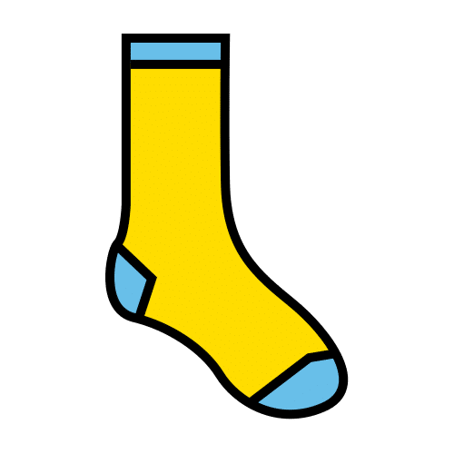
Parejas de calcetines. Al recoger la ropa, buscad juntos las parejas. ¿Sobra algún calcetín?
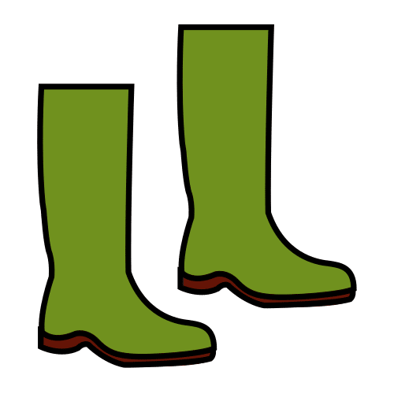
En fila por tamaño. Poned en fila los zapatos de la familia, del más pequeño al más grande.
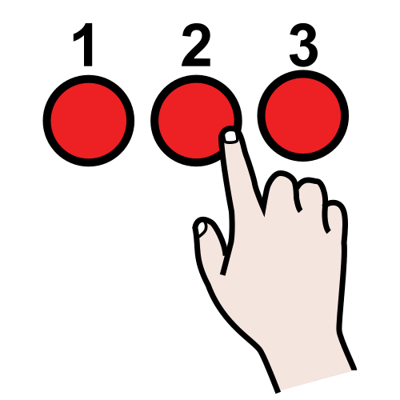
¿Cuántos botones? Al abrochar el abrigo, contad los botones. Tocad cada botón al contar.
En casa, las mismas normas que en el cole
Las piezas pequeñas no se meten en la boca. Por ejemplo, tapones, pompones, monedas o botones sueltos.
Si vuestro peque todavía se lleva objetos a la boca, usad solo ropa y zapatos para jugar.
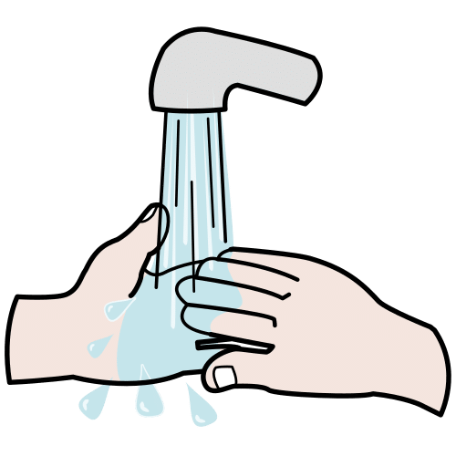
Al terminar, lavaos las manos.
Si os pedimos tapones para clase, que sean de botellas de agua o de leche. Nunca de productos de limpieza ni de medicinas.
Nota del cole
Estaciones de matemáticas de invierno. IdEducando, 2026. Licencia CC BY-NC-SA 4.0. Pictogramas: Sergio
Palao. Origen: ARASAAC (arasaac.org). Licencia CC BY-NC-SA. Propiedad: Gobierno de Aragón. La manopla es de IdEducando.
Fuentes y créditos
Fuentes, licencia y créditos
Estaciones de matemáticas de invierno: seis mesas en tres niveles y con fichas seguras. IdEducando,
noviembre de 2026. Ficha del material:
ideducando.es/material-gratuito/estaciones-matematicas-invierno.
Todas las fuentes se consultaron en su origen el 4 de noviembre de 2026.
Currículo
Decreto n.º 196/2022, de 3 de noviembre, por el que se establece la ordenación y el currículo de la etapa de Educación
Infantil en la Comunidad Autónoma de la Región de Murcia. BORM n.º 255, de 4 de noviembre de 2022: art. 4.6 (pág. 33056),
art. 14.1 (pág. 33060) y art. 17.3 (pág. 33061); Crecimiento en Armonía, criterios del segundo ciclo (pág. 33083) y
saberes (pág. 33084); Descubrimiento y Exploración del Entorno, orientaciones (pág. 33088), criterios del segundo ciclo
(pág. 33094) y saberes (págs. 33095 y 33096).
Diseño Universal para el Aprendizaje
CAST (2024). Las Directrices del Diseño Universal para el Aprendizaje, versión 3.0: consideraciones 2.5, 4.1, 6.4, 7.3, 8.2 y 8.3. udlguidelines.cast.org/es
Matemáticas con las manos
Carbonneau, K. J., Marley, S. C. y Selig, J. P. (2013). A meta-analysis of the efficacy of teaching mathematics with
concrete manipulatives. Journal of Educational Psychology, 105(2), 380-400. Identificador digital (DOI):
10.1037/a0031084. Resumen en ERIC (Education Resources Information Center), eric.ed.gov, registro EJ1007941.
Seguridad
Real Decreto 1205/2011, de 26 de agosto, sobre la seguridad de los juguetes. Boletín Oficial del Estado (BOE) n.º 209, de 31
de agosto de 2011, texto consolidado con la actualización del 28 de agosto de 2026: anexo II, parte I, punto 4 d), y anexo
V, parte B, punto 1 («No conviene para niños menores de 36 meses»).
Asociación Española de Pediatría (AEP), Comité de Soporte Vital (diciembre de 2024). Atragantamiento: medidas de
prevención con juguetes y qué hacer ante un atragantamiento.
static.aeped.es/atragantamiento_csvaep_final_6bd02592cf.pdf
Pictogramas: «Los símbolos pictográficos utilizados son propiedad del Gobierno de Aragón y han sido creados por Sergio Palao
para ARASAAC (https://arasaac.org), que los distribuye bajo Licencia Creative Commons BY-NC-SA». Si cambias el material,
deja este texto.
Los demás dibujos son de IdEducando: copos, pompones, tapones, ropa, bufandas, muñecos de nieve, témpano y taza de chocolate.
Como todo lo que lleva pictogramas de ARASAAC, este material es gratis y lo será siempre: IdEducando nace para ayudar a quien
acompaña a un peque con necesidades específicas. Además, la licencia de los pictogramas no deja venderlo. La licencia CC
BY-NC-SA 4.0 deja copiarlo y adaptarlo siempre que se cite a IdEducando, no se use para ganar dinero y se comparta con la
misma licencia.